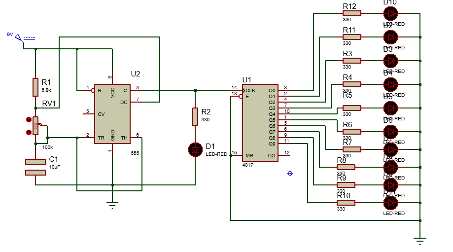
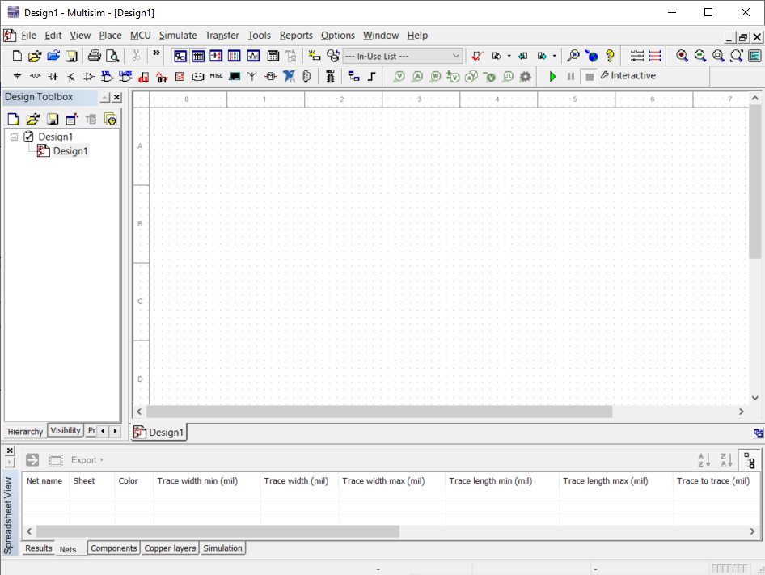
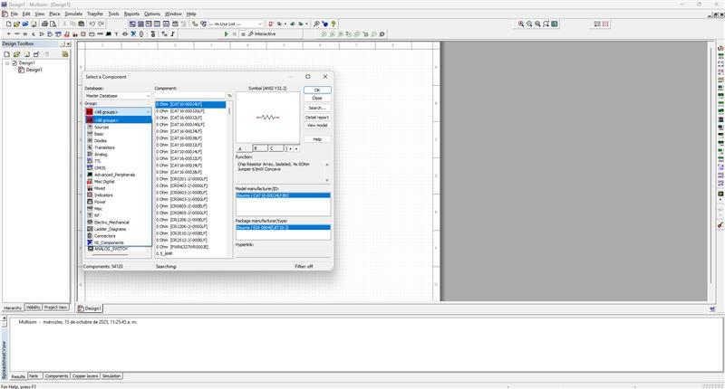

Práctica #2 - Multisim
Nombre del proyecto: Simulación de LEDs Secuenciales
Equipo: Sebastián Montaño y Juan Jacobo Flórez
Asignatura: Producción Electrónica
Fecha: 19/10/2025
Resumen
Esta práctica consistió en realizar un circuito secuencial básico en NI Multisim, utilizando un temporizador 555 y un contador CD4017 para generar un encendido progresivo de varios LEDs.
El objetivo fue familiarizarnos con las herramientas de simulación del software y comprender la lógica de funcionamiento de un sistema secuencial simple antes de pasar a la fase de diseño físico de la PCB.
El circuito permitió observar de forma virtual cómo los LEDs se encendían uno a uno según la señal de reloj generada por el 555, confirmando el correcto funcionamiento del contador y de la simulación.
- 
Entorno de Simulación y Herramientas
Entorno de Simulación: NI Multisim
Multisim combina el diseño esquemático con instrumentos virtuales que imitan el funcionamiento de herramientas reales de laboratorio, como multímetros, generadores de señal y osciloscopios.
El entorno de trabajo está compuesto por el área de diseño (Schematic), el menú de componentes (Place > Component...), la barra de instrumentos virtuales (al lado derecho), y los controles de simulación ubicados en la parte superior (▶️ Run, ⏸ Pause, ⏹ Stop).
- 
Proceso de Diseño y Simulación
El diseño inició con la búsqueda y colocación de componentes desde la Master Database usando la barra Filter, seleccionando los elementos principales:
- 555 Timer (NE555N): configurado en modo astable para generar una señal de reloj.
- Contador CD4017: encargado de activar cada LED en secuencia con cada pulso.
- LEDs y resistencias limitadoras: conectados a las salidas Q0–Q9 del 4017.
- Fuente de alimentación (Vcc) y tierra (GND).
- 
Los componentes se colocaron sobre el área de trabajo, se rotaron con Ctrl+R y se editaron sus valores por medio de doble clic.
Posteriormente se realizaron las conexiones siguiendo el diagrama lógico del circuito.
Importancia del 'GND'
Toda simulación necesita una referencia de 0V (tierra).
Si se omite, Multisim mostrará el error “Simulation failed to converge”.
Una vez completado el cableado, se ejecutó la simulación presionando Run (▶️).
El temporizador 555 generó una señal periódica que alimentó el pin de reloj del 4017, activando de forma secuencial cada salida y encendiendo los LEDs uno tras otro.
El multímetro virtual se utilizó para comprobar los valores de voltaje y corriente en los nodos principales del circuito, verificando la correcta alimentación de los componentes.
Tipos de Simulación en Multisim
Durante la práctica se utilizó la simulación interactiva, pero Multisim permite otras modalidades de análisis según el tipo de estudio deseado:
- Transitoria (Time Domain): observa la evolución temporal de la señal del 555.
- Análisis DC: muestra el comportamiento en estado estacionario.
- Análisis AC: útil para circuitos con respuesta en frecuencia.
- Barrido Paramétrico: permite variar el valor de un componente, como la resistencia o el capacitor del 555, y analizar su efecto en la frecuencia del reloj.
Validación y Resultados
La simulación mostró un funcionamiento correcto del sistema secuencial:
el 555 generó una onda cuadrada continua y el 4017 activó cada LED en orden con cada pulso.
El circuito respondió tal como se esperaba, demostrando la relación entre la frecuencia del temporizador y la velocidad de cambio de los LEDs.
Conclusión Técnica
La simulación permitió comprobar el principio de operación de un sistema de luces secuenciales controlado por un 555 y un 4017, facilitando su comprensión antes de su implementación física.
Conclusiones
La práctica permitió comprender la interacción entre componentes digitales y temporizadores dentro de un entorno de simulación.
Se comprobó que Multisim es una herramienta útil para visualizar el comportamiento de los circuitos y realizar ajustes de forma rápida antes del prototipado.
- El 555 y el 4017 permiten implementar fácilmente secuencias de encendido.
- La simulación reduce errores y agiliza la validación de conceptos.
- Multisim facilita el aprendizaje visual del flujo de señales y sincronización digital.